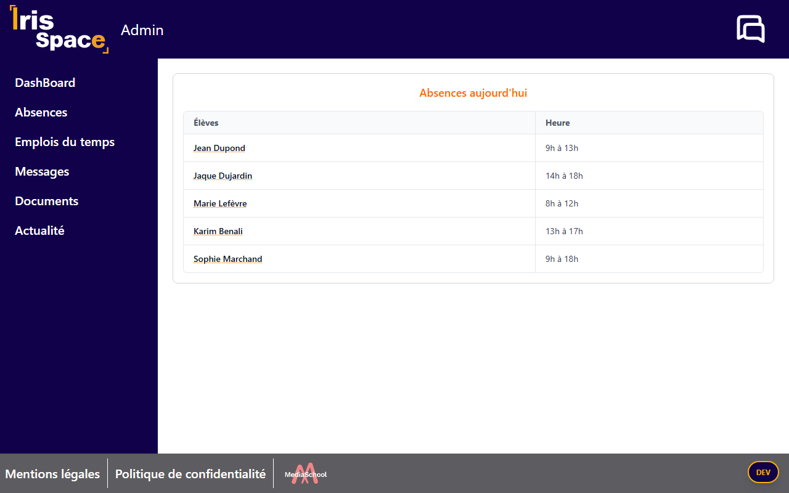
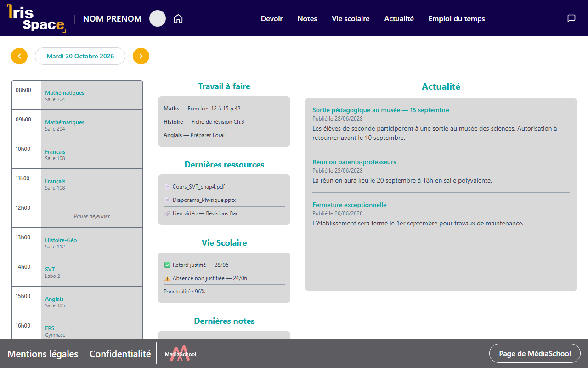
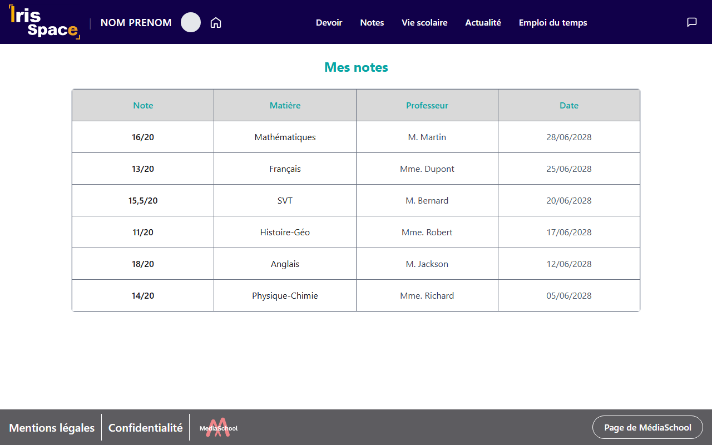

Projet de classe · SLAM · Mai – octobre 2026
Iris Space — Espace numérique de l'école
Conception et développement d'une application web pour une meilleure communication entre l'administration, les professeurs et les élèves.

Contexte
Iris Space est un projet de classe portant sur la création et la refonte du site de l'école Iris. L'objectif est de réunir dans une même application les échanges entre l'administration, les professeurs et les élèves : absences, emploi du temps, notes, documents, actualités et messagerie.
Le projet est mené à plusieurs étudiants sur un dépôt Git commun. Chacun développe ses pages sur une branche dédiée, puis les intègre au projet par une Pull Request.
Cinq espaces, un seul site
L'utilisateur se connecte, puis il est redirigé vers l'espace qui correspond à son profil. Chaque espace a sa propre navigation.
Administration
Tableau de bord, absences, emplois du temps, messages, documents et publication des actualités.
Professeur
Devoirs, notes, actualité, emploi du temps, arborescence, profil et messagerie. Certaines pages sont encore en construction.
Élève
Tableau de bord du jour, notes, profil, actualité, devoirs, vie scolaire, emploi du temps, documents et messages.
Visiteur
Accès sans compte aux actualités de l'école et à une page « À propos ».
MediaSchool
Pages du groupe MediaSchool : accueil, plages et événements.
Technologies
Le site a d'abord été réalisé en HTML, CSS (Tailwind) et JavaScript vanilla, avec une page HTML et un script par écran. En octobre 2026, l'application a été convertie en React (Vite + React Router) : chaque page devient un composant, et les éléments partagés (navbar, menu mobile, footer, messagerie) sont mis en commun.
C'est un prototype sans serveur : les données de démonstration (absences, cours, actualités, conversations, messages non lus) sont enregistrées dans le localStorage du navigateur. Un panneau « DEV » permet de réinitialiser ces données pendant les tests, et la connexion se fait avec des comptes de test (administrateur et élève).
Mon rôle
J'ai développé une partie de l'espace administration et de l'espace élève. Ces pages ont ensuite été reprises dans la version React de l'application.
-
Page des absences
Tableau des élèves absents du jour. Un clic sur le nom d'un élève affiche sa fiche sous la ligne : responsable, téléphone, email et statut de justification. Une seule fiche reste ouverte à la fois. Le comportement est codé en JavaScript vanilla.
-
Tableau de bord élève
Page d'accueil de l'élève : emploi du temps du jour avec navigation par date, travail à faire, dernières ressources, vie scolaire, dernières notes et actualités. J'ai aussi retravaillé la barre de navigation de l'espace élève.
-
Page des notes
Tableau des notes de l'élève, avec la matière, le professeur et la date de chaque évaluation.
-
Connexion de l'élève
Ajout du compte de test élève dans le script de connexion, avec la redirection vers l'espace élève.
Visualisation des réalisations
Captures de la version React actuelle. Les noms et les notes affichés sont des données fictives de démonstration.


